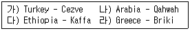
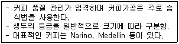
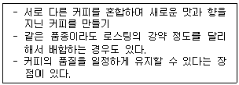
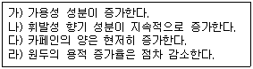
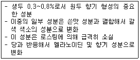
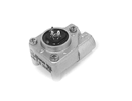
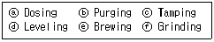
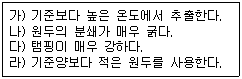

바리스타-2급 (2010-08-14 기출문제)
1과목: 커피학 개론
1. 커피의 어원(語源)은 나라에 따라 다르게 전해져 왔는데, 다음 내용 중 그 연결이 옳게 짝지어진 것은 어느 것인가?

- 가, 나
- 가, 다
- 나, 다
- 나, 라
(정답률: 80%)

2. 다음의 커피체리(coffee cherry)에 대한 설명 중 틀린 것은 어느 것인가?
- 커피체리는 커피종자에 따라 성장속도가 다르다.
- 커피 꽃이 지고 체리가 맺혀서 수확할 때까지의 기간은 아라비카 종이 로부스타 종보다 길다.
- 커피체리는 과육, 점액질, 파치먼트, 은피, 생두의구조로 이루어져 있다.
- 일반적으로 정상적인 체리 안에는 생두가 2개 들어 있다.
(정답률: 78%)
3. 다음 중 커피 품종이 서로 잘못 연결된 것은 어느 것인가?
- 티피카(Typica) - 아라비카 원종에 가장 가까운 변종
- 버번(Bourbon) - 티피카(Typica)의 돌연변이 품종
- 카투라(Caturra) - 인도의 고유품종
- 카티모르(Catimor) - 카투라(Caturra)와 HdT (Hibrido de Timor)의 교배종
(정답률: 76%)
4. 티피카(Typica) 품종에 대한 다음 설명 중 틀린 것은 어느 것인가?
- 아라비카 원종에 가장 가까운 품종으로서 콩의 모양은 긴 편이며 좋은 향과 신맛을 가지고 있다.
- 티피카(Typica)의 돌연변이종으로 스크린 사이즈(Screen size) 20보다 큰 콩을 마라고지페(Maragogype)라고 한다.
- 밀도는 약하나 커피 잎 녹병(CLR)에 강한 것이 큰 장점이다.
- 블루마운틴, 하와이 코나가 대표적인 티피카(Typica) 계통이다.
(정답률: 67%)
5. 다음 중 커피에 관한 기술이 사실과 다르게 설명된 것은 어느 것인가?
- 커피 3대 원종 중 하나인 Coffea Liberica는 오늘날 남미, 아프리카 등지에서 널리 재배되고 있다.
- 아라비카 종 생두는 센터컷이 곡선형인 반면 로부스타 종 생두는 센터컷이 직선형이다.
- 일반적으로 고지대에서 생산되는 생두일수록 저지대에서 생산되는 생두에 비해 보다 짙은 녹색을 띤다.
- 커피 꽃의 개화를 위해서는 몇 달 동안의 건기를 꼭 필요로 한다.
(정답률: 49%)
6. 아라비카 종 커피의 특징 중 틀리게 설명된 것은 어느 것인가?
- 린네(Linne)에 의해 품종으로 분류 등록된 시기는 1753년이다.
- 생두의 모양은 일반적으로 납작하다.
- 번식방법은 자가수분(Self-pollination)이다.
- 고형성분이 로부스타에 비해 더 많이 함유되어 있다.
(정답률: 49%)
7. 커피나무 가지 끝에서 발견되는 것으로 체리에 씨앗이 하나씩만 들어 있는 경우의 그린 빈을 무엇이라 하는가?
- 피베리(Peaberry)
- 플랫빈(Flat bean)
- 롱베리(Longberry)
- 마라고지페(Maragogype)
(정답률: 70%)
8. 다음 설명 중 옳지 않은 것은 어느 것인가?
- 로부스타 종은 베트남을 포함하는 동남아시아와 아프리카 여러 나라에서 주로 생산하고 있다.
- 북위 25도와 남위 25도 사이 지역은 커피 재배에 적합하여 커피벨트 혹은 커피 존이라고 한다.
- 콜롬비아 마일드 및 양질의 아라비카 종은 브라질과 콜롬비아를 비롯한 중남미 여러나라에서 주로 생산된다.
- 아라비카 종 커피나무는 꼭두서니과 상록 소교목이며, 그 원산지는 에티오피아의 모카지역으로 알려져 있다.
(정답률: 63%)
9. SCAA(Specialty Coffee Association of America)에 따른 스페셜티 커피 생두의 적정 함수율은 몇 %인가?
- 8~9%
- 9~10%
- 10~13%
- 15%
(정답률: 69%)
10. 커피체리 수확 방식에 대한 다음 설명 중 틀린 것은 어느 것인가?

- 핸드 피킹(Hand-picking) 방식은 잘 익은 체리만을 선택적으로 수확하기에 적절한 방법이다.
- 스트리핑(Stripping) 방식은 한 번에 여러개의 체리를 훑어 수확하는 방법이다.
- 핸드 피킹(Hand-picking) 방식의 수확은 커피의 품질을 떨어뜨린다.
- 스트리핑(Stripping) 방식은 인건비 부담이 적다.
(정답률: 81%)
11. 습식법(Wet processing)을 이용한 가공과정에 대하여틀리게 설명한 것은 어느 것인가?
- 건식법에 비해 생산 단가가 싸고 친환경적이다.
- 수확한 체리는 물을 이용해 가벼운 체리(Floater)와 무거운 체리(Sinker)로 분리한다.
- 발효조에서 16~36시간 정도 발효시키면 pH가 3.8 ~ 4.0 범위로 내려간다.
- 물이 풍부한 중남미 지역에서 아라비카 종 생산 시 주로 이용한다.
(정답률: 64%)
12. 파치먼트 커피(Parchment coffee)에 대한 올바른 설명은 어느 것인가?(문제오류로 실제 시험장에서는 모두 정답 처리 되었습니다. 여기서는 1번을 누르면 정답 처리 됩니다.)
- 수확하고 아직 가공되지 않은 상태의 체리를 말한다.
- 커피 체리에서 외피와 과육을 제거한 상태를 말한다.
- 발효가 끝나고 세척한 후 파치먼트가 남아있는 상태의 커피를 말한다.
- 건조까지 마치고 탈곡을 한 후 얻어진 생두 상태를 말한다.
(정답률: 73%)
13. 건조과정에 대한 다음 설명 중 틀린 것은 어느 것인가?
- 습식법(Wet processing)은 건식법((Dry processing)보다 건조과정이 짧다.
- 파치먼트의 수분 함량을 13% 이하로 낮추는 과정이다.
- 건조방법은 햇빛건조(Sun-dry)방법과 기계건조(Machine-dry)방법이 있다.
- 가공 후 보관은 습식법(Wet processing)과 건식법((Dry processing) 모두 파치먼트 상태로 보관한다.
(정답률: 66%)
14. 다음 설명에 해당되는 커피 생산 국가는 어느 나라인가?(문제 복원 오류로 정답은 4번입니다.)
- 코스타리카
- 인도네시아
- 쿠바
- 콜롬비아
(정답률: 84%)
15. SCAA 분류법 중 Specialty Grade의 등급기중의 설명에 해당하지 않는 것은 어느 것 인가?
- 350g 안에 결점수(Full defect)가 5이내이며 프라이머리 디펙트(Primary defects)는 허용되지 않는다.
- 퀘이커(Quaker)는 로스팅 된 커피 100g 중 3개까지 허용된다.
- 생두의 허용 함수율은 10~13% 이내이다.
- Body, Flavor, Aroma, Acidity 등의 특성을 가지고 있어야 한다.
(정답률: 73%)
16. 다음은 커피 생산국의 분류 기중이다. 바르게 연결된 것은 어느 것인가?
- 코스타리카 - SHG
- 멕시코 - SHB
- 과테말라 - SHB
- 온두라스 - G1
(정답률: 62%)
17. 다음의 SCAA 기중에 의한 결점두(Defect bean) 중 커피 맛과 향에 가장 영향을 적게 미치는 것은 어느 것인가?
- Shell
- Black bean
- Fungus damaged bean
- Sour bean
(정답률: 66%)
18. 다음 브라질 커피생산에 대한 설명으로 옳지 않은 것은 어느 것인가?
- 건식법으로 가공한 내추럴 커피가 대표적이며, 펄프드 내추럴 및 워시드 가공법에 의해서도 생산하는 나라이다.
- 세계 커피 생산량 1위로서 보통 세계 교역량의 30% 이상을 차지하는 나라이다.
- 생두 등급은 생두 크기에 따라 NY2, NY3, NY4 등으로 구분된다.
- 주요 생산지역은 미나스 제라이스(Minas Gerais), 상파울로(San Paulo), 이스피리투 산투(Espirito Santo), 바이아(Bahia), 파라나(Parana)주 등이다.
(정답률: 64%)
19. 디카페인 커피는 독일의 화학자 룽게에 의해 1819년에 카페인 제거 기술이 최초로 개발되었고, 상업적 규모의 카페인 제거 기술은 로셀리우스에 의해 1903년 완성되었다. 다음 보기 중 디카페인커피 제조공정이 아닌 것은 어떤 것인가?
- 용매 추출법
- 진공 추출법
- 물 추출법
- 초임계 추출법
(정답률: 76%)
20. 생두의 카페인 제거 공정 중 증기로 불린 생두에 유기용매를 이용하여 카페인을 추출하는 방법을 용매추출법이라 한다. 이 추출법과 거리가 가장 먼 것은 다음 중 어느 것인가?
- 유기 용매로서 벤젠, 클로로포름, 트리클로로에틸렌 등이 이용된다.
- 비용이 적게 들지만, 용매의 잔류성 문제로 인하여 안전성에 문제가 있다.
- 용매 추출법은 카페인 이외의 성분도 추출되는 단점이 있다.
- 최근에는 안전성을 고려하여 헬륨, 수소, 이산화탄소 등을 액체 싱태로 만들어 이용한다.
(정답률: 69%)
21. 생두 보관 중 많은 비에 노출되어 하얀 곰팡이가 생겨 결점두가 되었다. 이와 같은 결점두는 아래 표기 중 어디에 해당 되는가?
- Sour Bean
- Black Bean
- Fungus Damaged Bean
- Insert Damage
(정답률: 65%)
22. 우유를 40℃ 이상으로 가열할 때 생성되는 표면의 얇은 피막의 주성분은 무엇인가?
- 베타-락토글로불린
- 카제인
- 알파-락트알부민
- 칼슘
(정답률: 73%)
23. 우유에 함유된 성분으로서, 칼슘 흡수를 촉진하는 물질은 무엇인가?
- 불포화지방산
- 유당
- 포화지방산
- 무기질
(정답률: 49%)
24. 우유를 마시면 소화가 잘되지 않고 속이 거북해지는 현상을 유당불내증이라 한다. 유당불내증에 대한 설명 중 틀린 것은?
- 유당불내증은 대개 유전적 현상이다.
- 한국인의 대부분은 중학교 고학년이 되면 유당불내증이 나타나는 후천성 유당불내증 현상을 보인다.
- 한국인은 우유를 잘 소화시키지 못하는 경향이 있다.
- 백인이나 동양인보다 아프리카인이 우유를 더 잘 소화한다.
(정답률: 70%)
25. 과도한 커피 섭취 시, 커피의 폴리페놀 성분이 체내 섭취에 영향을 미치는 무기질은 어느 것인가?
- 셀레늄
- 철분
- 인
- 마그네슘
(정답률: 70%)
26. 다음 커피가 건강에 미치는 효과를 설명한 것 중 틀리게 설명한 것은 어느 것인가?
- 커피는 체내의 지방을 분해하는 다이어트 촉진 효과가 있다.
- 카페인은 스트레스를 감소시키는 효과가 있다.
- 커피는 아로마테라피(향기치료)로 활용될 수 있다.
- 커피는 활성산소 증가 효과를 가지고 있다.
(정답률: 74%)
27. 커피 관련재료의 보관에 필요한 냉장, 냉동고의 적절한 온도 범위는 다음 중 어느 것인가?
- 냉장고 : 5℃ 이하, 냉동고 : -18℃ 이하
- 냉장고 : 7℃ 이하, 냉동고 : -15℃ 이하
- 냉장고 : 8℃ 이하, 냉동고 : -12℃ 이하
- 냉장고 : 10℃ 이하, 냉동고 : -20℃ 이하
(정답률: 78%)
28. 커피전문점에서 영업 업무 시작 전에 판매 가능한 양 만큼 준비해 두는 각종재료를 무엇이라고 하는가?
- Coffee Stock
- Par Stock
- Pre Product
- Ordering Product
(정답률: 63%)
29. 영업을 위한 준비작업 사항 중 틀린 것은 어느 것인가?
- 영업 개시 전에 그날의 필요품을 준비한다.
- 모든 청소는 영업개시 전에 반드시 완료한다.
- 영업종류 후에 부패성이 있는 쓰레기는 즉시 치운다.
- 커피제조에 필요한 가니쉬(Garnish) 준비는 영업종류 후 다음 날을 위해 신선한 재료를 미리 마련한다.
(정답률: 73%)
30. 커피 판매 업장에서 핵심 관리요소인 원가의 3요소란 무엇을 말하는가?
- 재료비, 인건비, 업장경비
- 세금, 봉사료, 인건비
- 인건비, 세금, 재료비
- 재료비 세금, 업장경비
(정답률: 76%)
2과목: 로스팅과 향미 평가(커피 배전)
31. 다음은 로스팅에 관한 내용인데, 바르게 설명한 것은 무엇인가?
- 생두에 열을 가해 열분해를 일으켜 여러 가지 향미 성분들을 발현시키는 과정이다.
- 로스팅 정도에 따라서 진한 갈색에서 연한 갈색으로 변화하며, 맛과 향도 달라진다.
- 라이트 로스트(Light roast)는 가장 진하게 볶아진 상태며, 맛이 매우 강해 북미 지역에서는 에스프레소와 카푸치노 베리에이션에 사용하고 있다.
- 로스팅 과정에서 열에 의해 조직이 팽창되어 부피가 3~4배 증가한다.
(정답률: 69%)
32. 다음 중 로스팅을 하기 전 로스터(Roaster)가 고려하지 않아도 되는 것은 어느 것인가?
- 로스팅 머신의 용량과 생두 투입량에 맞는 투입 온도 결정
- 생두(Green bean)의 올바른 평가
- 로스팅 포인트(Roasting point)의 결정
- 원두 부피의 감소율
(정답률: 76%)
33. 로스팅에 의한 원두의 단계별 변화 및 분류에 대한 표현은 표준화되어 있지 않고, 나라와 지역에 따라 다르다. SCAA에 의한 분류는 원두색의 밝기에 따라 Agtron No 25~95 등 총 8단계로 구분한다. SCAA 분류법 중 Agtron 수치가 가장 높은 로스팅 그레이드는 무엇인가?
- Moderately
- Medium
- Light
- Dark
(정답률: 47%)
34. 커피가 공기 중의 산소와 반응하여 품질이 열화(劣化)되는 현상을 산화라 한다. 다음 성분 중 산화반응을 일으키는 커피의 성분은 무엇인가?
- 포화지방산
- 단백질
- 탄수화물
- 불포화지방산
(정답률: 73%)
35. 다음 설명에 해당하는 것은 무엇인가?

- Cupping
- Blending
- Roasting
- Foamming
(정답률: 78%)
36. 로스팅 과정은 크게 건조단계, 로스팅단계, 냉각단계로 이루어진다. 건조단계에 대한 설명으로 옳은 것은 다음 중 어느 것인가?
- 콩의 색이 녹색에서 황록색으로 바뀌는 과정으로 생두의 수분이 기화하는 단계이다.
- 주로 발열반응이 일어나는 단계이다.
- 캐러멜화 반응이 일어나고 CO2와 휘발성 산이 생성된다.
- 은피가 분리되고, 열분해를 통해 수용성 다당류가 생성된다.
(정답률: 58%)
37. 커피콩의 로스팅 후의 변화에 대한 다음 설명 중 적절하지 않은 것은 어느 것인가?
- 수분함량이 11%에서 1~2%로 감소한다.
- 생두의 당분, 단백질, 유기산이 갈변반응을 통해 가용성성분으로 변화한다.
- 생두 1g당 약 2~5㎖의 가스를 발산하며 중량을 감소한다.
- 가스의 87%는 질소와 아황화가스로 고온의 열로 인한 건열반응에 의해 생성된다.
(정답률: 67%)
38. 커피의 성분 중 커피를 마시는 순간 커피 추출액의 표면에서 생긴 증기에 의해 입속에서 느껴지는 향의 주된 성분은 무엇인가?
- 비휘발성 액체 상태의 유기성분
- 케톤(Ketone)이나 알데히드(Aldehyde) 계통의 휘발성 성분
- 지질 같은 비 용해성 액체와 수용성 고체 물질
- 에스테르(Ester) 화합물
(정답률: 51%)
39. 커피를 수확한 후 건조과정에서 환경이 나쁘면 생 커피의 효소가 당분을 식초산으로 분해하면서 나타나는 향미의 결함은 무엇인가?
- Earthy(흙냄새)
- Fermented(발효된 맛)
- Rubbery(고무냄새)
- Musty(곰팡이 냄새)
(정답률: 58%)
40. 커피 로스팅 시 일어나는 변화 중 틀린 것으로 묶어놓은 것은 어느 것인가?

- 가, 나
- 가, 다
- 나, 다
- 다, 라
(정답률: 53%)
41. 다음 중 커피의 쓴맛 성분이 아닌 것은 어느 것인가?
- 퀴닉산(Quinnic acid)
- 트리고넬린(Trigonelline)
- 카페인(Caffeine)
- 그루코스(Glucose)
(정답률: 58%)
42. 커핑(cupping)에서 뜨거운 물을 붓고 3~5분 사이에 컵 상층부의 커피 막을 깨서 맡는 향을 설명하는 용어는?
- Crust
- Break
- Fragrance
- Uniformity
(정답률: 46%)
43. 다음은 커피의 어떤 성분에 대하여 설명한 것인가?

- 탄수화물의 다당류
- 지질의 불포화지방산
- 단백질의 유리아미노산
- 탄수화물의 유리당
(정답률: 50%)
44. 다음 중 향미(Flavor)에 대한 설명으로 올바른 것은 어느 것인가?
- 커피를 볶을 때 나오는 가벼운 휘발성 물질로 인해 발생하는 프래그랑스(Fragrance)이다.
- 커피의 품질을 결정하는 가장 중요한 요소로 맛과 향기 그리고 바디(Body)에 대한 종합적인 느낌을 의미한다.
- 커피 추출 시 발생하는 아로마(Aroma)로 원두를 분쇄하여 뜨거운 물로 추출하면 분자가 큰 물질이 나오면서 그 중 일부가 기화하여 코에 느껴지는 것을 말한다.
- 향미평가는 ‘관능검사(Sensory evaluation)'로 실시되는 데 표준 용어가 없고 각 나라마다 등급이 달라 그 기준이 애매모호하다.
(정답률: 57%)
45. 월드컵테이스터스챔피언대회(WCC) 경기규정이 아닌 것은 어느 것인가?
- 세(③잔(트라이앵글)의 컵이 여덟(8)개 그룹으로 준비되어 있다.
- 세(③잔 중 두 잔을 동일하며, 다른 한 가지의 커피를 골라내는 것이다.
- 여덟(8)개 그룹의 커피를 10분 이내에 가장 많이 맞힌 참가자가 선반된다.
- 가장 많은 답을 찾은 참가자가 우승이 된다. 동점이 나올 경우 빠른 시간에 대회를 마친 참가자가 우승하게 된다.
(정답률: 45%)
3과목: 커피 추출
46. 커피를 추출하는 물에 대한 설명이다. 바르게 설명한 것은 어느 것인가?
- 물에 녹아 있는 철이나 동 같은 금속성분은 커피의 맛을 풍부하게 해 준다.
- 경도가 높은 물에 녹아 있는 칼슘염, 수돗물 에 소독제로 들어 있는 염소는 커피의 성분과 반응하여 맛과 향기를 한층 더해준다.
- 카페에서 수돗물을 추출기에 직접 연결하여 쓸 때는 반드시 중간에 정수 장치를 연결하여 염소, 유기물, 칼슘 등을 제거한다.
- 칼슘염은 유기산과 결합하여 커피의 단맛을 더해준다.
(정답률: 81%)
47. 커피의 산패에 대한 설명으로 바른 것은 어느 것인가?
- 커피가 공기 중 산소와 결합하여 맛과 향이 변화하는 것을 말한다.
- 분쇄 후 일정시간이 경과하여 안정된 이후 추출하는 것이 좋다.
- 다크 로스티(Dark roast) 된 원두는 라이트 로스트(Light roast) 된 원두보다 서서히 산화된다.
- 멜라노이딘이 형성되면서 진행되는 과정이다.
(정답률: 80%)
48. 다음 중 포장법으로 사용하지 않는 것은 어느 것인가?
- 진공포장
- 산소가압포장
- 불활성가스포장
- 밸브포장
(정답률: 64%)
49. 다음은 커피 추출의 3대 원리이다. 순서가 올바른 것은 어느 것인가?
- 용해, 침투, 분리
- 침투, 용해, 분리
- 분리, 침투, 용해
- 용해, 분리, 침투
(정답률: 72%)
50. 20세기의 음료라고 하는 에스프레소 커피 추출의 특징을 나열한 것이다. 잘못 설명된 것은 어느 것인가?
- 필터홀더에 분쇄된 원두커피 가루를 담아 고르기와 다지기를 끝낸 후에는 가능한 신속하게 추출버튼을 눌러야 한다.
- 보일러 내의 과열된 물의 온도를 떨어뜨리기 위하여 추출 직전 물 흘리기를 하는 것은 커피 맛을 위한 중요한 과정 중 하나이다.
- 에스프레소의 추출 시, 향미 보존을 위하여 예열된 데미타세에 담아 서빙하는 것이 좋다.
- 필터홀더를 늘 그룹헤드에 장착하여 두는 것은 다음 커피 추출에 부담을 주는 것으로 청소가 끝난 후 분리 보관한다.
(정답률: 68%)
51. 다음 중 배큠브루어(사이폰) 추출에 관한 설명으로 틀린 것은 어느 것인가?
- 커피가루와 물의 접촉시간에 따라 커피의 농도를 달리할 수 있다.
- 플라스크의 표면에 물기가 없도록 마른 수건으로 닦아 준다.
- 커피입자를 에스프레소 추출보다 가늘게 한다.
- 진공식 추출로서 열원으로는 알코올램프, 할로겐램프 등이 이용된다.
(정답률: 61%)
52. 커피는 발견된 것만 850여 가지의 향미성분을 포함하고 있다. 이 다양한 향미 성분을 추출하기 위하여 다양한 추출방법들이 개발되었다. 다음 추출 방법 중 수용성 성분을 가장 많이 추출할 수 있는 방법을 무엇인가?
- 에스프레소 추출법
- 이브릭 추출법
- 더치 추출법
- 핸드드립 추출법
(정답률: 51%)
53. 일반적으로 한 잔의 커피를 마시기 위한 과정 중 반드시 거쳐야 하는 과정 아닌 것은 어느 것인가?
- 로스팅(Roasting)
- 블렌딩(Blending)
- 분쇄(Grinding)
- 추출(Brewing)
(정답률: 77%)
54. 아래의 그림은 에스프레소 기계의 ‘플로우 미터(Flow meter)'이다. 이 부품에 불량이 발생되어 내부 회전체(Turbine Wheel)가 작동하지 않을 때 나타나는 현상은 무엇인가?

- 그룹헤드에 찬물이 배출되게 된다.
- 커피기계의 전원이 들어오지 않는다.
- 커피 추출압력이 형성되지 않는다.
- 커피추출 물량의 조절이 되지 않는다.
(정답률: 53%)
55. 에스프레소 추출 과정으로 가장 적절한 순서는 어느 것인가?

- ⓕ-ⓐ-ⓓ-ⓒ-ⓑ-ⓔ
- ⓕ-ⓓ-ⓒ-ⓐ-ⓑ-ⓔ
- ⓕ-ⓐ-ⓒ-ⓑ-ⓓ-ⓔ
- ⓕ-ⓓ-ⓑ-ⓒ-ⓐ-ⓔ
(정답률: 54%)
56. 에스프레소 모신 부품 중에 보일러에 유입되는 찬물과 추출에 쓰이는 뜨거운 물의 흐름을 통제하는 것은 무엇인가?
- 펌프 모터
- 솔레노이드 밸브
- 플로우 미터
- 샤워 스크린
(정답률: 50%)
57. 다음 커피 장비의 관리 지침 중 매일 점검해야 하는 일은 어느 것인가?
- 보일러의 압력, 추출압력, 물의 온도 체크
- 분쇄기(Grinder) 칼날의 마모상태
- 연수기의 필터 교환
- 그룹헤드의 개스킷 교환
(정답률: 78%)
58. 그라인더(Grinder) 작동 후에 2배 이상의 휴식시간이 필요한 이유는 무엇인가?
- 입자크기의 변화를 막기 위하여
- 분쇄되는 양의 변화를 막기 위하여
- 그라인더(Grinder) 날의 열을 식히기 위하여
- 전기절약을 위하여
(정답률: 77%)
59. 에스프레소커피 제조 시 과소추출(Under extraction)의 원인으로 올바르게 연결된 것은 어느 것인가?

- 가, 나
- 가, 다
- 나, 다
- 나, 라
(정답률: 63%)
60. 다음은 커피에 관련된 용어이다. 내용이 옳지 않은 것은 어느 것인가?
- 크레마(Crema)-에스프레소 머신으로 추출한 커피 위에 덮이는 갈색 거품을 말한다.
- 프렌치 프레스(French Press)-커피 추출 기구 중 하나로 가정용 에스프레소 머신이라고 할 수 있다.
- 디카페인(Decaffeine)-커피 자체에 함유되어 있는 카페인 성분을 제거한 커피를 말한다.
- 도피오(Doppio)-더블 에스프레소를 지칭하는 이태리어다.
(정답률: 70%)